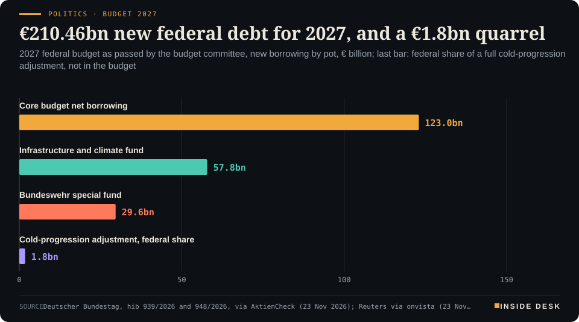
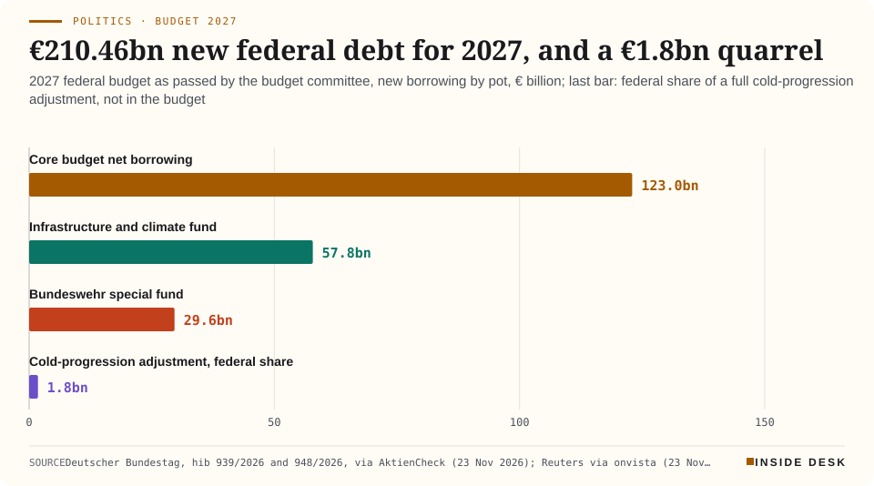
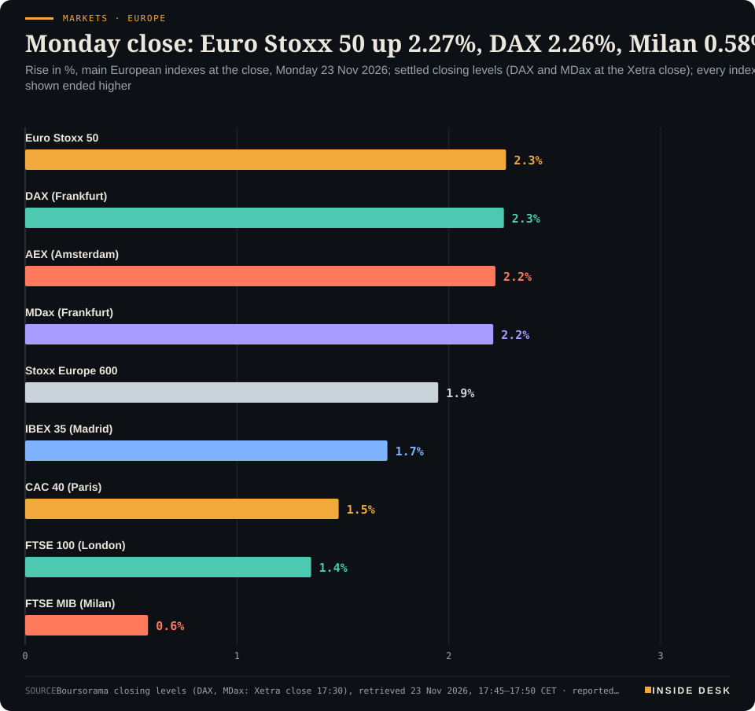
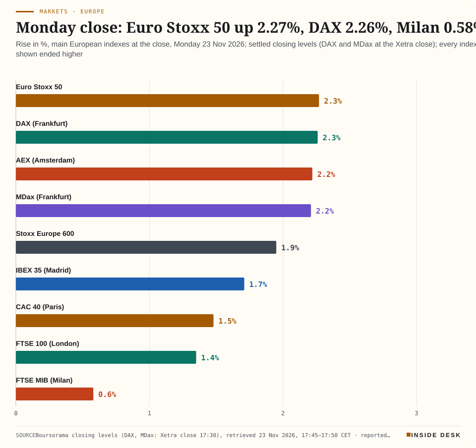
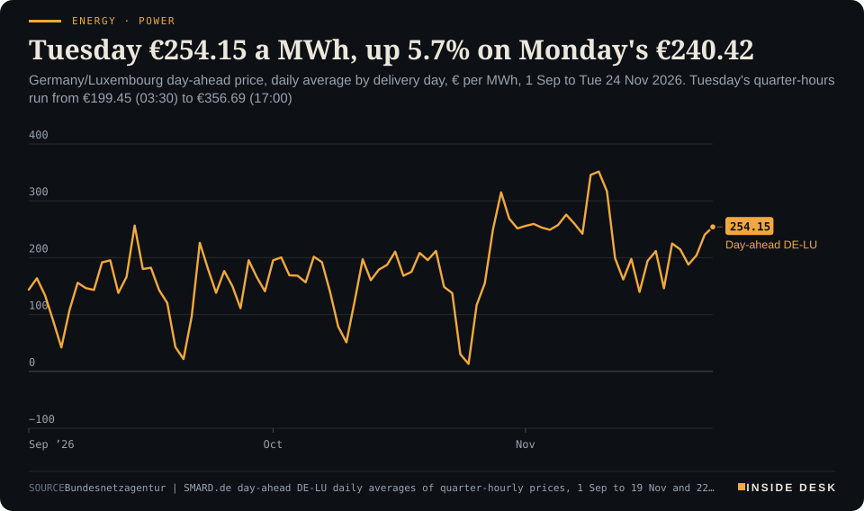
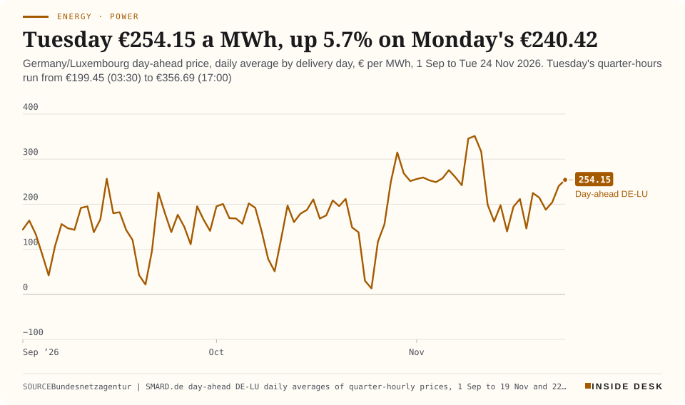

Inside Desk ePaper, Evening ePaper · Mon 23 Nov 2026
Monday, 23 November 2026Always free
Inside Desk
Evening ePaperPublished 18:30 CET · Berlin
Lead · Politics & Institutions
Söder's cold-progression push met a wall of CDU premiers on Monday. The quarrel is about less than 1% of the borrowing, and about who signs the cheque.
Budget week opens with Söder rebuffed by his own side; Nvidia takes back its founder and markets half a week. Also: €254.15 power, NATO on Poland's missiles, California's sea walls, a Podium vs Print.
Nvidia got its founder back and markets got their nerve, while Berlin argued over €1.8 billion inside a €210 billion borrowing plan, and the frost arrived on time.
Geo-economics · p. 5
Markets & Macro · p. 6
Energy & Industry · p. 9
Climate & Weather · p. 16
The day in one sentenceNvidia got its founder back and markets got their nerve, while Berlin argued over €1.8 billion inside a €210 billion borrowing plan, and the frost arrived on time.
ContentsInside Desk · Evening ePaper23 November 2026
Budget week opens with Söder rebuffed by his own side; Nvidia takes back its founder and markets half a week. Also: €254.15 power, NATO on Poland's missiles, California's sea walls, a Podium vs Print.
11 edition pieces · 11 desks · Published 18:30 CET, 23 November 2026
23 ePaper extras, added , 23 November. They appear only in the ePaper and carry their own time.
18:30 Evening ePaper, updated live until 22:30 with an “Updated” time and a Latest page
Sun 10:00 The Sunday Magazine
Berlin time. Every issue is free.
How to read it
Swipe, use the arrow keys or the page strip. Tap any headline for the reading view. Press / to search, t for contents, +/− to zoom. Download the PDF.
LatestInside Desk · Evening ePaper23 November 2026
Latest
Live: this page and the issue are updated until 22:30 Berlin time.
Politics: Brussels proposes its next Russia sanctions package, from banks and ships to sport
Markets: corrected the dollar figures for Zscaler and Anthropic in the New York piece
LeadInside Desk · Evening ePaper23 November 2026
Politics & Institutions · Lead · 3 min
Söder's cold-progression push met a wall of CDU premiers on Monday. The quarrel is about less than 1% of the borrowing, and about who signs the cheque.
This morning Markus Söder had a podium: cold progression, he said on Sunday, must be adjusted “urgently”. By lunchtime he had a reply, and it came from his own side of the table. “Cold progression was simply not the instrument of choice,” Hendrik Wüst, the CDU premier of North Rhine-Westphalia, told ZDF; the coalition committee, which Söder attended, had chosen the electricity-tax cut instead, “even if we would all wish for more”1. Gordon Schnieder, the CDU premier of Rhineland-Palatinate, called the demand “simply not serious if you don’t say honestly how it is to be financed”1. The finance ministry noted “very, very different” responses from the Länder and called it, in effect, a discussion among the Länder1. (Quotes translated.)
That is how budget week begins. From Tuesday the Bundestag debates the 2027 federal budget in second reading; on Friday at 12:40 the third reading starts, and after 90 minutes of debate comes the vote2.
The size of the thing. Core spending is €560.92 billion, 6.9% more than the €524.54 billion planned for 20262. Net borrowing in the core budget rises from €97.96 billion to €122.97 billion. Add the two special funds, €57.84 billion for infrastructure and climate neutrality and €29.65 billion for the Bundeswehr, and new borrowing comes to €210.46 billion, according to the Bundestag’s own press service as cited by AktienCheck2. Of the core borrowing, €84.55 billion falls under the exemption for defence and security; the €38.43 billion that counts against the debt brake sits, in the press service’s words, “exactly at the ceiling”2.
Politics · Budget 2027€210.46bn new federal debt for 2027, and a €1.8bn quarrel2027 federal budget as passed by the budget committee, new borrowing by pot, € billion; last bar: federal share of a full cold-progression adjustment, not in the budget


Bar chart of planned new federal borrowing in Germany for 2027 as passed by the Bundestag budget committee: 122.97 billion euros in the core budget, 57.84 billion in the special fund for infrastructure and climate neutrality and 29.65 billion in the Bundeswehr special fund, together 210.46 billion euros. A fourth, much smaller bar shows about 1.8 billion euros, the federal government's reported share of the cost of a full adjustment for cold progression in 2027, which is not in the budget.
Source: Deutscher Bundestag, hib 939/2026 and 948/2026, via AktienCheck (23 Nov 2026); Reuters via onvista (23 Nov 2026) · reported figures · CSV
The size of the quarrel. A full cold-progression adjustment would cost the federal government and the Länder about €1.8 billion each next year and the municipalities about €400 million, Reuters reports; Berlin refuses to carry all three shares, and only Bavaria and Hessen have offered to pay theirs1. Desk arithmetic: the federal €1.8 billion is about 0.9% of the €210.46 billion the federal government plans to borrow. It is not the amount that is hard. It is that the debt-brake part of the budget is already full, so every new euro of relief needs a euro found somewhere else, and the electricity-tax cut was where the coalition chose to spend its euro1,2.
That cut is not free either. It takes the tax on household and business power from 2.05 to 0.1 cents a kilowatt hour for 2027 only, at a cost of €5.4 billion, paid from unneeded money on the renewables (EEG) account; if that account runs short, the coalition has promised a package of measures, from cutting subsidies to raising other taxes3. For 2028 the plan already shows a gap of about €25 billion, which a permanent cut would widen to about €30 billion3.
What you can actually watch. The interesting part of this week is not Wednesday’s general debate, however lively ZDF expects it to be4. It is the paperwork: whether the electricity-tax cut, agreed after the budget committee had finished, is written into the budget before Friday’s vote, as it has to be3; and whether any Land other than Bavaria and Hessen puts a number next to its name for cold progression1. A demand with a financing line is a policy. Without one, as Schnieder put it, it is a speech1.
The calm reading is not that Germany cannot afford €1.8 billion. It is that a budget at its ceiling forces politicians to rank their promises, in public, with numbers attached. That is uncomfortable for a party leader on a Sunday. It is exactly what a parliament is for on a Friday.
Geo-economicsInside Desk · Evening ePaper23 November 2026
Geo-economics · 2 min
Monday's flash surveys put German private-sector growth at its fastest since March 2022 and France at its sharpest fall since May. The average, unchanged, hides both.
Two surveys, collected over the same week from 12 to 19 November, describe two different countries1,2.
Germany. S&P Global’s flash composite index rose to 55.0 from 53.4, the highest since March 2022 and the fifth month of growth in a row1. Factory output ran at 57.4, its strongest in more than five years; services rose to 54.0; new orders grew at the fastest pace in more than four and a half years, helped by export orders1. The dullest line is the most interesting one: manufacturing employment rose for the first time in almost three and a half years, ending what S&P Global calls the longest run of factory job cuts in the survey’s history1. Firms hire when the order book stops being a rumour.
France. The composite fell to 46.2 from 46.6, the sharpest drop in activity since May; the manufacturing PMI fell to 47.9, a twelve-month low2. Joe Hayes of S&P Global said the data “raised the odds of France entering a technical recession in the fourth quarter”, and the outlook index was the gloomiest since late 2012 if the first pandemic months are left out2. Firms cited weak domestic demand and clients hesitating ahead of next year’s presidential election2. Selling prices rose at an eight-month low pace, because customers were asking for discounts2.
The average. For the euro area as a whole the composite was unchanged on the month, at 51.7, and growing for a fifth month3,4. Bond markets noticed the gap anyway: the French ten-year yield fell 8 basis points to 4.8% on Monday afternoon, but its premium over the German Bund was still 150 basis points, a spread that has widened sharply this year, Reuters reported3.
The constructive reading is not that one country is winning. It is that a currency union is an insurance contract: a German order book and a French one, priced in the same money, smooth each other out. That works as long as the weaker partner’s problem is demand and politics, which can change, and not its invoices, which have to be paid either way.
Geo-economics · Short item · ePaper extra, added
Kyiv confirmed strikes on the Merkury and a cargo ship off eastern Libya. Tripoli condemned them; the UN mission asked for an investigation.
Ukraine’s security service, the SBU, said seven domestically made naval drones were launched from a mothership on Sunday against two Russian vessels at Benghazi, sinking the corvette Merkury, one of Russia’s newest ships, and hitting the dry cargo ship MV Angara, which Volodymyr Zelenskyy said was carrying Russian weapons1. The operation was about 2,400 km from the front line1.
The Merkury had docked to refuel and resupply under a cooperation agreement between Russia and the eastern Libyan authorities of Khalifa Haftar, the Institute for the Study of War said, while escorting Russian cargo ships1. …
Geo-economics · Brief · ePaper extra, added
Oil fell again on Monday, extending a three-week losing streak, as concerns about global growth weighed on demand expectations; the unresolved conflict involving the United States, Israel and Iran limited the fall, ADVFN reported2. WTI was down 3.5% at $80.55 a barrel in New York’s morning, its lowest since August1; Brent was quoted at $89.15 at 17:39 CET3. A barrel that falls while shares soar tells you markets fear a slower economy more than a closed strait, for now.
Markets & MacroInside Desk · Evening ePaper23 November 2026
Markets & Macro · 2 min
Every major European index closed higher on Monday, led by chip toolmakers. Milan lagged, and the DAX is still well short of Friday a week ago.
The DAX closed Monday’s Xetra session at 25,363.70, up 2.26%, after a six-day losing run that had taken it more than 8% below its record of just over 27,000 in mid-November1,3. The MDax rose 2.21% to 29,374.32, the Euro Stoxx 50 2.27% to 6,077.06 and the Stoxx Europe 600 1.95% to 637.841,2. Paris’s CAC 40 gained 1.48% to 8,044.84, London’s FTSE 100 1.35% to 10,486.35, Madrid’s IBEX 35 1.71% and Milan’s FTSE MIB only 0.58%1,2.
Markets · EuropeMonday close: Euro Stoxx 50 up 2.27%, DAX 2.26%, Milan 0.58%Rise in %, main European indexes at the close, Monday 23 Nov 2026; settled closing levels (DAX and MDax at the Xetra close); every index shown ended higher


Bar chart of gains on the main European stock indexes at the close on Monday 23 November 2026, all higher on the day: the Euro Stoxx 50 up 2.27 percent to 6,077.06, the DAX up 2.26 percent to 25,363.70 at the Xetra close, Amsterdam's AEX up 2.22 percent to 1,089.84, Frankfurt's MDax up 2.21 percent to 29,374.32, the Stoxx Europe 600 up 1.95 percent to 637.84, Madrid's IBEX 35 up 1.71 percent to 19,195.50, Paris's CAC 40 up 1.48 percent to 8,044.84, London's FTSE 100 up 1.35 percent to 10,486.35 and Milan's FTSE MIB up 0.58 percent to 48,984.63. These are settled closing levels.
Source: Boursorama closing levels (DAX, MDax: Xetra close 17:30), retrieved 23 Nov 2026, 17:45–17:50 CET · reported figures · CSV
The trigger arrived before New York opened: Nvidia’s board reinstated Jensen Huang, and Nvidia was quoted up 32.87% in the afternoon2. In Europe the biggest winners were the companies that build chipmaking machines: ASML, ASM International, BE Semiconductor and STMicroelectronics each rose more than 10%, ADVFN reported4. The rally was broad, with gains in nearly every sector; the exceptions were defensive staples such as Unilever and Nestlé, as money rotated back into risk4.
The stronger German PMI helped too, Andreas Lipkow of CMC Markets wrote, while noting that the turmoil in US tech and the return of rate fears had dampened the appetite to buy5. Consorsbank’s Jochen Stanzl called Monday’s move an “Erholung auf Bewährung”, a recovery on probation3.
Desk arithmetic: the DAX closed at 24,802.78 on Friday, per Boursorama’s previous close, and needs another 6.5% or so to get back to 27,0001. …
Markets & Macro · Short item · ePaper extra, added
Wall Street's rebound ran from chips to memory to servers. A $44 billion all-stock deal and a short week complete the picture.
New York opened Monday the way Europe closed it, only louder. At 17:39 CET the Nasdaq Composite stood at 24,187.15, up 6.94%, and the Dow Jones at 49,753.08, up 3.34%, according to Boursorama’s quotes2. In the morning Investopedia had the S&P 500 up 5.1%1. …
Markets & Macro · Brief · ePaper extra, added
Gold futures were up 4.5% at $3,675 an ounce on Monday morning in New York, after hitting a 15-month low on Friday, Investopedia reported1. Bitcoin traded at about $62,600, having fallen below $58,000 on Friday as investors avoided risky assets1. An asset sold as a hedge and an asset sold as a bet both rose on the same morning. That is less a verdict on either than a sign of how much was sold on Friday simply because it could be sold. Nothing here is investment advice.
Politics & InstitutionsInside Desk · Evening ePaper23 November 2026
Politics & Institutions · Short item · ePaper extra, added
Speaking by video to NATO's parliamentary assembly in Berlin, Ukraine's president asked for a meeting of Ukraine, Europe, America and Russia as soon as possible.
“We must do everything to make sure that the four-party meeting – Ukraine, Europe, America and Russia – happens as soon as possible,” Volodymyr Zelenskyy told the 72nd NATO Parliamentary Assembly in Berlin by video link on Monday1. Partners, he said, wanted to try to make it happen before Christmas: “We hope it happens sooner. We are ready to do this literally tomorrow”1.
The same morning in the same city, Germany’s foreign minister Johann Wadephul told the assembly: “We will defend every centimeter of NATO territory,” and, addressing Vladimir Putin, “we may be a defensive alliance but we are prepared to defend our countries and our alliance”1. NATO Secretary General Mark Rutte was due at the Chancellery in the afternoon for an official reception with Friedrich Merz1.
Two sentences, one direction: a seat at a table, and a fence around the room. Neither is a date. The useful thing to watch is not who says “as soon as possible” but who sends out invitations with a city and a day on them.
Two quieter lines sit inside the budget the Bundestag votes on this Friday. The child supplement (Kindersofortzuschlag) of €25 a month will continue to be paid, except to families receiving asylum-seeker benefits1; ZDF noted on Monday that the supplement, once due to be cut, is being kept2. Housing benefit (Wohngeld), drawn by 1.3 million households, keeps its current level but will not be raised for at least a year, after the government dropped planned cuts of more than €1 billion1. Desk arithmetic: €25 a month is €300 a year per child. Small numbers, paid on time, are what most people mean by “the state”.
The European Commission has proposed its next sanctions package against Russia, Ursula von der Leyen announced on Monday1. It would add 60 more Russian banks and more than 70 further shadow-fleet ships to the list, bar Europeans from sitting on the supervisory boards of Russian companies, and tighten limits on European help building or repairing Russian energy infrastructure1. It also reaches sport: Russian teams and athletes could no longer compete under the Russian flag at events in the EU1. Soldiers who have fought for Russia since February 2022 would face an entry ban1.
None of it applies until the 27 member states agree; Brussels is aiming for a deal before Christmas1. A proposal is a draft, not a law.
Psychology & BehaviourInside Desk · Evening ePaper23 November 2026
Psychology & Behaviour · 2 min
Nvidia lost about a third of its value in two weeks and gained about a third in a morning. The feeling says 'back'. The arithmetic says 'not yet'.
Two numbers in Monday’s news look like mirror images. Nvidia’s shares “had shed nearly 33%” from the day Jensen Huang admitted an affair on 8 November, CNBC wrote; on Monday they “surged 33%” on his return1.
Your mind adds them up and gets zero. The arithmetic does not. Desk arithmetic: a share at 100 that loses 33% stands at 67. A 33% gain on 67 takes it to about 89. To get back to 100 from 67 it needs to rise by about 49%. Falls and rises are measured from different starting points, so a fall always needs a bigger rise to undo it.
Investopedia’s live page shows how quickly the language runs ahead of the sums. The stock “regained almost all of that ground in less than an hour”, it wrote, and in the same entry: at about $168 it “remains well below” its record close of $239 on 6 October2. Both statements are true. They measure from different days, and the feeling of the morning attaches to the first one.
The same asymmetry runs through the indexes. The Nasdaq fell 10% last week; a 7% gain on Monday does not undo it, because 10% off 100 leaves 90 and 7% on 90 is 96.32.
None of this says what a share will do next. It is a small habit of mind: when a headline puts two percentages next to each other, ask “of what?” before you feel anything. Rebound days are when that question is least popular and most useful.
Psychology & Behaviour · Short item · ePaper extra, added
A Gallup survey of 15,925 young people in 16 countries finds the strongest links to life satisfaction offline: money at home, safety at home, a good caregiver.
Among 15- to 22-year-olds surveyed in 16 countries this year, a median of 93% have a close friend in person and 37% a close online-only friend, Gallup reports with Boston Children’s Digital Wellness Lab1. In-person friendships are more often rated high-quality, 41% against 26%1.
The factors most strongly associated with how young people rate their lives are all offline: how comfortably the household gets by on its income, feeling safe at home, and the quality of the relationship with the main caregiver1. A young person with all three at their best rates life 3.4 points higher on a 0-to-10 scale, on average, than one with all three at their worst1. A medium- or high-quality in-person friendship goes with higher wellbeing; an online-only friendship does not, and having one goes with more loneliness and more moderate-to-severe anxiety and depression, whatever its quality1.
Two cautions. The surveys in 14 of the 16 countries used non-probability web samples, and these are associations, not causes1. Still, the calm reading is encouraging: the things that matter most are ordinary and fixable, and few of them live on a screen.
Researchers at UCSF and UC San Diego analysed about 23,000 people who wore a smart ring for an average of 154 days and computed a Sleep Regularity Index from 0 to 1001. People with few or no depressive symptoms averaged 84; those with severe symptoms 751. An SRI of 84 means going to bed and waking roughly an hour earlier or later than the day before; 75 is closer to an hour and a half, said first author Severine Soltani1. Irregular sleep may be a cause or a symptom, said senior author Ashley Mason; the study, published in Scientific Reports on 12 November, was partly funded by the ring’s maker, and two authors disclose ties to it1. A regular alarm costs nothing to test.
Energy & IndustryInside Desk · Evening ePaper23 November 2026
Energy & Industry · 2 min
Tuesday's day-ahead power price rose 5.7% on Monday's, with the evening peak doing most of the work, as the weather service promises frost all week. Oil, meanwhile, went the other way.
Tuesday’s power was auctioned at noon, and the bill is in: the German-Luxembourg day-ahead price averages €254.15 a megawatt hour for delivery on Tuesday 24 November, up from €240.42 for Monday, according to the quarter-hourly results on Energy-Charts1. Desk arithmetic: that is 5.7% more.
The average hides the shape. Tuesday’s cheapest quarter-hour is €199.45 at 03:30; the dearest is €356.69 at 17:00, when the light has gone, the heating is on and people are cooking1. Monday’s peak was €331.13 at 17:451. The difference between night and early evening is now about €157 a megawatt hour, which is the clearest price signal on the system: shift what you can away from five o’clock, and somebody’s power station does not need to start.
Energy · PowerTuesday €254.15 a MWh, up 5.7% on Monday's €240.42Germany/Luxembourg day-ahead price, daily average by delivery day, € per MWh, 1 Sep to Tue 24 Nov 2026. Tuesday's quarter-hours run from €199.45 (03:30) to €356.69 (17:00)


Line chart of the daily average German-Luxembourg day-ahead electricity price from 1 September to 24 November 2026, in euros per megawatt hour. Prices mostly ran between about €100 and €210 in September and October, climbed above €250 from late October, peaked at €351.48 on Tuesday 10 November, fell to €139.70 on Sunday 15 November, were €204.08 on Sunday 22 and €240.42 on Monday 23 November, and stand at €254.15 for the latest delivery day, Tuesday 24 November.
Source: Bundesnetzagentur | SMARD.de day-ahead DE-LU daily averages of quarter-hourly prices, 1 Sep to 19 Nov and 22 Nov 2026 retrieved 22 Nov 2026; 20, 21, 23 and 24 Nov via Fraunhofer ISE Energy-Charts (data: Bundesnetzagentur | SMARD.de), retrieved 23 Nov 2026, 17:34 CET · CC BY 4.0 · CSV
The weather explains the direction. The Deutscher Wetterdienst calls this “a foretaste of the coming winter”: highs only around freezing, moderate night frosts, and down to −5°C to −8°C in the south if skies stay clear tonight, with permanent frost above 300 to 500 metres by Thursday2. Fog and low cloud also mean less sun on the panels in the lowlands, and cold, still air rarely brings much wind.
Oil went the other way. …
Energy & Industry · Short item · ePaper extra, added
Alongside the electricity-tax cut, the coalition agreed a temporary cap on pump prices. What is known, and what is not yet.
The budget the Bundestag votes on this Friday comes with a second energy measure that gets less attention than the electricity tax. From 1 January 2027 the government wants a temporary cap on fuel prices, designed to stop abusive mark-ups at filling stations1. …
Energy & Industry · Brief · ePaper extra, added
Drax, the British power generator, gained 7% on Monday after forecasting core profit above market consensus, ADVFN reported1. On the same afternoon European consumer-staples shares went the other way, with Unilever down 1.6% and Nestlé down 1% as money rotated out of defensive stocks1. A utility rising on guidance during a tech rally is a small reminder that power stations, too, have order books, and that a winter of high evening prices is somebody’s revenue line. Nothing here is investment advice.
Money, FX & CommitteesInside Desk · Evening ePaper23 November 2026
Money, FX & Committees · 2 min
Monday's rally pulled money out of safe bonds in New York but not in Frankfurt. Italy's premium over Germany shrank to 106.5 basis points.
Last week investors ran to German government bonds: the ten-year Bund yield fell 10 basis points on Friday alone1. On Monday, with Nvidia’s chief executive back and shares rallying, you would expect that trade to reverse. In Frankfurt it did not.
By Monday afternoon the German ten-year yield was down 2 basis points on the day at 3.285%, having been higher earlier, Reuters reported; US ten-year yields moved the other way, up 5 basis points to 4.96%, as investors piled into shares1. Investopedia had the US ten-year at 4.98% in New York’s morning, from 4.94% at Friday’s close2.
The bigger moves were in the spreads, the extra yield governments pay over Germany. France’s ten-year fell 8 basis points to 4.8%, narrowing its premium to 150 basis points; Italy’s fell 4 basis points to 4.365%, cutting its premium to 106.5 basis points, about 5 less than on Friday1. Dan Coatsworth of AJ Bell called the mood “an immense sigh of relief”1.
Why would Bund yields fall on a risk-on day? One plausible reading: when fear eases, money leaves the safest bond and moves to the next-safest ones, which is what narrowing French and Italian spreads look like. A falling spread is a small, real saving for a treasury that refinances billions every month. It is not a verdict on France’s economy, which Monday’s survey showed shrinking (see Geo-economics).
Nothing here is investment advice.
Money, FX & Committees · Short item · ePaper extra, added
In Dublin on Monday the ECB's chief economist showed how heat and energy mix feed into prices. He offered evidence, not a rate signal.
Philip Lane, the ECB’s chief economist, presented “Climate change and monetary policy” to the Irish Department of Finance’s Climate Economy Group in Dublin on Monday; the ECB published the slides1.
Three exhibits stand out in the summary2. First, a six-month-ahead forecast of unprocessed food inflation that includes weather alongside commodity and producer prices, and estimates of the 2025 summer heatwave’s effect on food prices after twelve months. Second, data through 19 November 2026 showing that electricity prices react less to higher gas prices in countries with more renewable and nuclear generation; other modelling finds that lower reliance on fossil fuels reduces inflation volatility. Third, bank lending survey evidence on how climate risks affect credit standards and loan demand2.
The careful part is the caveats. The heatwave scenarios for 2035 and 2060 are sensitivity exercises, not forecasts; the policy simulations hold the policy rate constant and so do not prescribe a monetary response2. That is how a central bank should talk about climate: as a source of price shocks to be measured, not a cause to be campaigned for.
Money, FX & Committees · Brief · ePaper extra, added
At 17:40 CET the euro was quoted at $1.0894 and the VIX, the index of expected volatility on the S&P 500, at 27.27, according to Boursorama1. A VIX in the high twenties after a rally of this size says something useful: markets still expect big daily swings. Relief is not the same as calm. The euro, meanwhile, did what a large currency does on a day of share-price fireworks: very little. Nothing here is investment advice.
Ordinary & Inherited LifeInside Desk · Evening ePaper23 November 2026
Ordinary & Inherited Life · 2 min
The electricity-tax cut goes into the budget this week. What it is worth to a household, what it is not, and how it sits next to this week's power prices.
The line. From 1 January 2027 the electricity tax for households and businesses falls from 2.05 cents to 0.1 cents a kilowatt hour, the European minimum, for one year1. The coalition wants to extend it but has no money for 2028 yet1.
What it is worth. Verivox, the comparison site, puts the saving at about €93 a year, or 7%, for a three-person household using 4,000 kWh and paying about €1,375 a year; about €65 for two people using 2,800 kWh; and about €35 for a single person using 1,500 kWh1. Most tariffs oblige suppliers to pass the change on, Verivox says, so power should indeed get cheaper1. Desk arithmetic: 1.95 cents a kilowatt hour is the tax difference; on 2,800 kWh that is €54.60 before VAT, and with 19% VAT about €65, which matches the Verivox figure.
What it is not. It is not a change in the wholesale price. On Monday’s auction, Tuesday’s power costs €254.15 a megawatt hour on average, or about 25 cents a kilowatt hour before grid fees, taxes and margins, and €356.69 at 17:002. Desk arithmetic: the wholesale spread between Tuesday’s cheapest and dearest quarter-hour is about 15.7 cents a kilowatt hour, eight times the tax cut. If you have a dynamic tariff, timing matters more than the tax; if you have a fixed tariff, as most households do, the cut is the part you will actually see.
Who pays. €5.4 billion, from unneeded money on the renewables account; if that runs short, the coalition says it will agree a package of savings or other taxes1. A good ledger has two columns. This one has a second column marked “to be decided”.
Ordinary & Inherited Life · Short item · ePaper extra, added
The retail association expects a record for Black Friday and Cyber Monday. A survey of 1,000 shoppers, read slowly.
Black Friday falls on 27 November this year, the same day as the budget vote, and Cyber Monday on 30 November1. The retail association HDE expects €6.2 billion in sales across the two days, a new high and almost 6% more than last year, after sales fell for the first time in 20251.
The survey behind the forecast was carried out for the HDE by IFH Köln in October among about 1,000 online shoppers1. Of them, 51% plan to hunt for bargains on Black Friday and more than a third on Cyber Monday1. About €1.9 billion of the spending is expected to go on Christmas presents; 58% say they use Black Friday for Christmas shopping and 48% Cyber Monday1. Among online shoppers aged 30 to 39, planned use of Cyber Monday is 47% above the average1.
“Despite subdued consumer sentiment”, spending intentions are at a new high, said Stephan Tromp of the HDE1. That sounds like a contradiction, and it is not: when money is tight, people do not stop buying presents; they move the buying to the days with discounts. A forecast of record sales is also a forecast of careful households.
Ordinary & Inherited Life · Brief · ePaper extra, added
If you care for a relative at home, you may know the monthly allowance of up to €42 for consumable care supplies such as hand disinfectant and disposable gloves. The government’s care reform would end it as a dedicated benefit and move the items into a new relief budget1. The Bundesrat on Friday asked for the change to be dropped, calling the move “alien to the system”; about 3.1 million people needing care are looked after by relatives alone, and for them, the Länder say, the dedicated benefit is the only tool that reliably secures infection control1. The draft foresees savings of €300 million in 2029 and €800 million in 20301. Small boxes, delivered monthly, keep people out of hospital.
Tech & ComputeInside Desk · Evening ePaper23 November 2026
Tech & Compute · Podium vs Print · 2 min
Nvidia's board brought Jensen Huang back on Monday and the stock rose a third. The president claimed credit. The company's own documents keep three open files on the desk.
Podium
“Huang "did nothing wrong".”
Donald Trump, US president, Interview with CNBC, Monday 23 November 2026
Print1 investigation, 1 new committee, 1 new post
The Board reiterated that the committee's investigation will proceed to conclusion.
Nvidia press release and SEC Form 8-K, 23 November 2026 (8-K dated 22 November)
The podium. President Trump told CNBC on Monday that he had spoken to Nvidia’s board “directly and indirectly” and that Huang “did nothing wrong”; in a post he called the reinstatement “the correct and proper decision”1. Investopedia reported that he said he had convinced the board4. Nvidia shares rose about 33%1.
The print. The company’s own words are more careful. The board voted unanimously to reinstate Huang as president, chief executive and director, “effective immediately”, after it was “satisfied with respect to Mr. Huang’s candor”, and says it “received input from senior levels of the United States government” before concluding his return “poses no national security risk”2. The 8-K adds one dull line that matters: Colette Kress, interim chief executive since Huang resigned on 13 November, goes back to being chief financial officer3,1.
Then come the open files. The independent directors’ investigation into reporting that Huang was the target of a foreign intelligence effort “will proceed to conclusion”2. A new National Security and Export Control Committee of independent directors is hiring counsel, and the company is searching for a Chief Compliance Officer, a post it did not have2. Congress has its own dates: a transcribed interview for Huang on 1 December and for the general counsel on 2 December, set before Monday1.
The gap. A politician can declare innocence; a board can only declare confidence and keep investigating. Even after the jump, the stock at about $168 was well below its record close of $239 on 6 October, Investopedia noted4. The market has priced the return of a founder. It has not priced the report.
Tech & Compute · Short item · ePaper extra, added
The day before Huang's return, the US intelligence chief said the inquiry into Alice Huang and her former firm is ongoing.
“There is an investigation ongoing into her firm and into her,” Director of National Intelligence Jay Clayton told ABC on Sunday, about Alice Huang and Megaspeed, a Singapore-based cloud company; “Nvidia chips, they are the jewel,” he said1. …
Tech & ComputeInside Desk · Evening ePaper23 November 2026
Tech & Compute · Brief · ePaper extra, added
ASML, ASM International, BE Semiconductor and STMicroelectronics each rose more than 10% on Monday, and Arm Holdings 18%, ADVFN reported1. In Frankfurt, Infineon gained almost 4% by midday; its shares had lost about half their value since a record in June2. Europe’s semiconductor champions mostly sell machines, designs and power chips, ordered months or years ahead. A chief executive’s return moves their share prices in an hour; their order books will tell you next quarter whether anything else moved.
Health & CareInside Desk · Evening ePaper23 November 2026
Health & Care · 2 min
About six million people in Germany caught a new respiratory infection in the second week of November. Flu and Covid are still side characters, except for the over-80s.
The Robert Koch Institute’s weekly numbers, as reported by MDR on Monday, describe a normal November1. In the second week of the month, 9 to 15 November, about 7.2% of people in Germany caught a new respiratory infection, about 7,200 per 100,000, roughly six million people, of whom about 800,000 had a fever1. For the time of year the RKI calls that moderate1.
What is circulating is the ordinary cold: rhinoviruses and parainfluenza viruses, which mostly bring sore throats, runny noses and coughs, rarely fever1. Covid runs at about 3.5 infections per 100,000 and influenza at about 1.61. In wastewater, the RKI measures less Sars-CoV-2 than at this time of year in any year since 20201.
The exception is age. Among people over 80 the Covid rate is 15.2 per 100,000, far higher than in other groups, and the very old still carry a high risk of dying from an infection; the RKI recommends a prompt booster for them1. Saxony, which runs its own sampling, reports most cases among older adults and the elderly1.
The numbers come from GrippeWeb, a weekly survey of about 12,000 people, and from a sentinel of doctors’ practices1. That dull machinery is why you can know, in the third week of November, that this is a cold season and not yet a flu season. The calm conclusion is the old one: the window for a flu jab in risk groups is still open until December, and the cold week ahead is when people crowd indoors1.
Health & Care · Short item · ePaper extra, added
The Bundesrat approved the emergency-care reform on Friday, including a dispensing right for doctors. Pharmacists object; the Länder want medicines-law questions settled afterwards.
The emergency-care reform has cleared the Bundesrat, and with it comes a right for doctors in the emergency service to dispense medicines themselves, the Pharmazeutische Zeitung reports1. Pharmacists had sharply criticised the plan and warned against weakening the rule that medicines are dispensed by pharmacies1. The Länder want medicines-law questions clarified too, and asked the federal government in a resolution to make improvements afterwards; such a resolution is not binding1.
In the same session the Bundesrat took a first position on pharmacies making preparations in advance, without a patient-specific prescription. The Federal Administrative Court recently ruled that practice inadmissible1. The Länder warn that care would become much harder without it, a concern a hospital pharmacist had also raised, and recommend that the law make clear that, as a rule, no special licence is needed for such stock preparations for practice use1.
None of this is dramatic. It is the plumbing that decides whether a patient seen at night leaves with the first dose in hand, and whether a hospital pharmacy can prepare a common mixture before the ward asks for it.
Health & Care · Brief · ePaper extra, added
Across the population, about 3.5 people per 100,000 are newly infected with Covid in a week; among people over 80 it is 15.2, MDR reports from the RKI’s week-46 data1. Desk arithmetic: more than four times the average. The variant circulating most is XFG, which the WHO rates as a low additional risk1. Because the very old still face a high risk of dying from an infection, the RKI recommends a prompt booster for them1. If you visit someone over 80 this winter, the useful question is not “how bad is Covid?” but “when was your last jab?”.
Security & OrderInside Desk · Evening ePaper23 November 2026
Security & Order · 2 min
Warsaw asked allies for more air cover and an extra early-warning aircraft. Rutte called the incursion dangerous and declined to say whether it was deliberate.
The three objects that came down in south-eastern Poland on Friday were Russian Kh-101 cruise missiles, according to Polish prosecutors; they fell at Nowy Lipowiec in the Lublin region and at Rudnik and Mołodycz in Podkarpackie during one of Russia’s larger attacks on western Ukraine, and no one was injured1,2,3.
On Monday the North Atlantic Council, NATO’s top decision-making body, met at Poland’s request in Brussels1. Deputy Defence Minister Paweł Zalewski said Warsaw would propose better “situational awareness” on the eastern flank and more air cover from allied aircraft, including an additional AWACS early-warning plane, and that there were “grounds to assume” the council would back the proposals1. He called the incursion “an obvious Russian provocation” and noted that one missile came down 35 to 40 km from the Nowa Dęba training ground, where allied exercises took place that day1. The meeting is not an Article 4 consultation, Zalewski said1.
In Berlin, NATO Secretary General Mark Rutte told the alliance’s parliamentary assembly that “it is clear that this is a dangerous incident”, but that whether it was intentional was for the authorities to establish: “I will never speculate”3. Poland intends to summon the Russian ambassador once its investigations are done3.
The useful thing about this week is the procedure. A council meeting, named missiles, a list of requested aircraft: none of it is dramatic, and all of it can be checked later. Zalewski raised one harder question for the record, whether NATO procedures and pilots’ decisions on shooting down incoming objects could be made faster2. That one will take longer than a Monday.
Security & Order · Short item · ePaper extra, added
German media report a Western intelligence assessment. The Bundeswehr declined to comment on it but described what a nuclear blast in space would do to satellites.
Western military intelligence services believe Russia plans to station a nuclear weapon in space by the end of this year, NDR, WDR and the Süddeutsche Zeitung reported on Monday, as summarised by DW1. The intelligence was reportedly shared among NATO members recently, and Defence Minister Boris Pistorius was said to have been briefed by Bundeswehr experts1.
A Bundeswehr spokesman reportedly declined to comment on the reports, acknowledging only that Russia has such capabilities and warning that a nuclear explosion in space would devastate satellite communications: “It would effectively mean: back to the stone age”1. The defence ministry said it continuously observes developments in space; the Russian embassy said it had no information about such plans1.
Context matters here. …
Security & Order · Brief · ePaper extra, added
On Saturday Finland reported a suspected airspace violation by a manned Russian military helicopter near the south-eastern town of Loviisa, DW reports1. Moldova, which is in neither the EU nor NATO, also reported airspace violations, most recently at the weekend1. Romania, Lithuania, Latvia and Estonia have reported violations before1. A list like this is not alarming because it is long. It is useful because each entry has a place, a date and a government that wrote it down.
Climate & WeatherInside Desk · Evening ePaper23 November 2026
Climate & Weather · 2 min
The year's highest tides arrive over Thanksgiving on top of record-warm water. The interesting numbers are not the forecasts but the heights of the defences.
The first king tides of the Californian winter, the year’s highest astronomical tides, run from 22 to 24 November, just as Americans travel for Thanksgiving, the Guardian reports1. This year they come on top of water that is already high: a Kelvin wave and a marine heatwave have raised coastal levels by 6 to 12 inches or more, according to NOAA as quoted, and in late October Los Angeles, San Diego, Santa Barbara and La Jolla broke their all-time observed water levels1.
The National Weather Service forecasts “major to extreme coastal flooding” in San Francisco this week, with up to 2.8 feet of water above ground level1. Mayor Daniel Lurie asked residents to avoid unnecessary travel from Monday afternoon to Wednesday1. Daniel Swain, a climate scientist, said the tides are expected to be half a foot to a foot higher than October’s, and that a moderate storm could add 6 to 12 inches of surge1.
The most useful paragraph is about concrete. Oakland airport recently raised the sea wall around its perimeter to 13 to 17 feet and expects to withstand the flooding; the highest-risk parts of San Francisco airport’s barrier are only 8 feet high, the San Francisco Chronicle reported, though the airport says its tarmac is protected by sheet-pile walls, seawalls and berms, with sandbags and pumps ready1. San Diego is handing out sandbags, ten per household; Huntington Beach has warned residents in flood-prone areas of a $1,000 fine if they do not clear drains or set barriers; San Rafael bought water-weighted walls for its bayfront levee1.
Chance decides the rest: if rain or storm waves miss the peak tides, the risk falls1. Mark Merrifield of UC San Diego called the advance warnings from the weather services a positive sign1. That is the constructive lesson from a frightening week: the warnings went out weeks early, and the places that raised their walls before the record are the ones that can sleep.
Climate & Weather · Short item · ePaper extra, added
Heavy rain on Saturday flooded Kapuas Hulu district in Indonesian Borneo. The water is receding; the alert runs for ten weeks, because November floods there recur.
Flooding after heavy rain on Saturday inundated 33 villages in four sub-districts of Kapuas Hulu, in Indonesia’s West Kalimantan province, affecting 11,113 families or 28,875 people, the national disaster agency BNPB said on Monday1. The provincial government has declared an emergency alert for floods, whirlwinds and landslides, formalised by a governor’s decree and valid until 31 January 2027, with a disaster response command post1.
By Monday the water was gradually receding and traffic had resumed on major roads, BNPB said1. It had warned the province on Thursday 19 November of heavy to extreme rainfall1. …
Climate & Weather · Brief · ePaper extra, added
On Monday morning there were 22 cm of snow on the Feldberg in the Black Forest and a closed cover around Oberstdorf, the Deutscher Wetterdienst reported1. Tonight snow showers in the east can bring 1 to 5 cm locally in Mecklenburg-Western Pomerania or Brandenburg, while the clear south cools to −5°C to −8°C1. From Wednesday, rain or snow in the south-west can freeze on the ground; on Thursday a low over northern Italy may bring heavier snow to southern and south-eastern Bavaria, though the meteorologist says model differences are “still very large”1. Above 300 to 500 metres it stays below freezing all day1. A first ordinary winter week: drain the garden tap, find the scraper.
Charts and dataInside Desk · Evening ePaper23 November 2026
Charts and data
Energy · PowerTuesday €254.15 a MWh, up 5.7% on Monday's €240.42Germany/Luxembourg day-ahead price, daily average by delivery day, € per MWh, 1 Sep to Tue 24 Nov 2026. Tuesday's quarter-hours run from €199.45 (03:30) to €356.69 (17:00)
Line chart of the daily average German-Luxembourg day-ahead electricity price from 1 September to 24 November 2026, in euros per megawatt hour. Prices mostly ran between about €100 and €210 in September and October, climbed above €250 from late October, peaked at €351.48 on Tuesday 10 November, fell to €139.70 on Sunday 15 November, were €204.08 on Sunday 22 and €240.42 on Monday 23 November, and stand at €254.15 for the latest delivery day, Tuesday 24 November.
Source: Bundesnetzagentur | SMARD.de day-ahead DE-LU daily averages of quarter-hourly prices, 1 Sep to 19 Nov and 22 Nov 2026 retrieved 22 Nov 2026; 20, 21, 23 and 24 Nov via Fraunhofer ISE Energy-Charts (data: Bundesnetzagentur | SMARD.de), retrieved 23 Nov 2026, 17:34 CET · CC BY 4.0 · CSV
Latest values
Series
Value
Date
Chart
Day-ahead DE-LU
254.15
24 Nov 2026
Tuesday €254.15 a MWh, up 5.7% on Monday's €240.42
Last data point of each series in the charts above, from the Inside Desk data archive. Sources under each chart.
Back pageInside Desk · Evening ePaper23 November 2026
Before you close the tab
The day in one sentence
Nvidia got its founder back and markets got their nerve, while Berlin argued over €1.8 billion inside a €210 billion borrowing plan, and the frost arrived on time.
One thing you can do this week
In this first cold week, call one person over 80 you know and ask two dull questions: is the heating working properly, and when was your last jab? Write the answers down. Most winter emergencies are prevented by somebody asking early, not by somebody arriving late.
A habit, not advice.
What went right
German factories are hiring again. In November's flash survey, manufacturing employment rose for the first time in almost three and a half years, ending what S&P Global calls the longest run of factory job cuts since its records began; firms cited piling order books and brighter prospects 1. New orders across the private sector grew at the fastest pace in more than four and a half years 1. Hiring is the dullest form of optimism, and the most reliable one.
In euros at home
From 1 January the electricity tax falls from 2.05 to 0.1 cents a kilowatt hour for one year; Verivox puts the saving at about €35 a year for a single person using 1,500 kWh, €65 for two people using 2,800 kWh and €93 for three using 4,000 kWh 2. Desk arithmetic: that is about €2.92, €5.42 and €7.75 a month. For comparison, Tuesday's wholesale power costs €254.15 a megawatt hour on average, about 25.4 cents a kilowatt hour before grid fees, taxes and margins 3.
Desk arithmetic on the cited figures.
Small words
Spread
The extra interest a government pays to borrow compared with a benchmark, usually Germany, measured in basis points (one basis point is 0.01 percentage points). On Monday France's ten-year bonds yielded 150 basis points, or 1.5 percentage points, more than Germany's 4. A narrowing spread means lenders are a little less nervous.
Commentary for information only. Not investment, legal, tax, medical or political advice. Inside Desk is free and reader-supported. Every number is sourced in the piece it appears in.
This issue has been updated.
All articles in this edition
Politics & Institutions · 3 min read
€210.46 billion to borrow, €1.8 billion nobody will sign for: budget week opens
Söder's cold-progression push met a wall of CDU premiers on Monday. The quarrel is about less than 1% of the borrowing, and about who signs the cheque.
This morning Markus Söder had a podium: cold progression, he said on Sunday, must be adjusted “urgently”. By lunchtime he had a reply, and it came from his own side of the table. “Cold progression was simply not the instrument of choice,” Hendrik Wüst, the CDU premier of North Rhine-Westphalia, told ZDF; the coalition committee, which Söder attended, had chosen the electricity-tax cut instead, “even if we would all wish for more”1. Gordon Schnieder, the CDU premier of Rhineland-Palatinate, called the demand “simply not serious if you don’t say honestly how it is to be financed”1. The finance ministry noted “very, very different” responses from the Länder and called it, in effect, a discussion among the Länder1. (Quotes translated.)
That is how budget week begins. From Tuesday the Bundestag debates the 2027 federal budget in second reading; on Friday at 12:40 the third reading starts, and after 90 minutes of debate comes the vote2.
The size of the thing. Core spending is €560.92 billion, 6.9% more than the €524.54 billion planned for 20262. Net borrowing in the core budget rises from €97.96 billion to €122.97 billion. Add the two special funds, €57.84 billion for infrastructure and climate neutrality and €29.65 billion for the Bundeswehr, and new borrowing comes to €210.46 billion, according to the Bundestag’s own press service as cited by AktienCheck2. Of the core borrowing, €84.55 billion falls under the exemption for defence and security; the €38.43 billion that counts against the debt brake sits, in the press service’s words, “exactly at the ceiling”2.
Politics · Budget 2027€210.46bn new federal debt for 2027, and a €1.8bn quarrel2027 federal budget as passed by the budget committee, new borrowing by pot, € billion; last bar: federal share of a full cold-progression adjustment, not in the budget
Bar chart of planned new federal borrowing in Germany for 2027 as passed by the Bundestag budget committee: 122.97 billion euros in the core budget, 57.84 billion in the special fund for infrastructure and climate neutrality and 29.65 billion in the Bundeswehr special fund, together 210.46 billion euros. A fourth, much smaller bar shows about 1.8 billion euros, the federal government's reported share of the cost of a full adjustment for cold progression in 2027, which is not in the budget.
Source: Deutscher Bundestag, hib 939/2026 and 948/2026, via AktienCheck (23 Nov 2026); Reuters via onvista (23 Nov 2026) · reported figures · CSV
The size of the quarrel. A full cold-progression adjustment would cost the federal government and the Länder about €1.8 billion each next year and the municipalities about €400 million, Reuters reports; Berlin refuses to carry all three shares, and only Bavaria and Hessen have offered to pay theirs1. Desk arithmetic: the federal €1.8 billion is about 0.9% of the €210.46 billion the federal government plans to borrow. It is not the amount that is hard. It is that the debt-brake part of the budget is already full, so every new euro of relief needs a euro found somewhere else, and the electricity-tax cut was where the coalition chose to spend its euro1,2.
That cut is not free either. It takes the tax on household and business power from 2.05 to 0.1 cents a kilowatt hour for 2027 only, at a cost of €5.4 billion, paid from unneeded money on the renewables (EEG) account; if that account runs short, the coalition has promised a package of measures, from cutting subsidies to raising other taxes3. For 2028 the plan already shows a gap of about €25 billion, which a permanent cut would widen to about €30 billion3.
What you can actually watch. The interesting part of this week is not Wednesday’s general debate, however lively ZDF expects it to be4. It is the paperwork: whether the electricity-tax cut, agreed after the budget committee had finished, is written into the budget before Friday’s vote, as it has to be3; and whether any Land other than Bavaria and Hessen puts a number next to its name for cold progression1. A demand with a financing line is a policy. Without one, as Schnieder put it, it is a speech1.
The calm reading is not that Germany cannot afford €1.8 billion. It is that a budget at its ceiling forces politicians to rank their promises, in public, with numbers attached. That is uncomfortable for a party leader on a Sunday. It is exactly what a parliament is for on a Friday.
Desk comment A budget is a list of promises with a column for who pays. Read the column.
55.0 in Germany, 46.2 in France: the euro area's two engines run in opposite gears
Monday's flash surveys put German private-sector growth at its fastest since March 2022 and France at its sharpest fall since May. The average, unchanged, hides both.
Two surveys, collected over the same week from 12 to 19 November, describe two different countries1,2.
Germany. S&P Global’s flash composite index rose to 55.0 from 53.4, the highest since March 2022 and the fifth month of growth in a row1. Factory output ran at 57.4, its strongest in more than five years; services rose to 54.0; new orders grew at the fastest pace in more than four and a half years, helped by export orders1. The dullest line is the most interesting one: manufacturing employment rose for the first time in almost three and a half years, ending what S&P Global calls the longest run of factory job cuts in the survey’s history1. Firms hire when the order book stops being a rumour.
France. The composite fell to 46.2 from 46.6, the sharpest drop in activity since May; the manufacturing PMI fell to 47.9, a twelve-month low2. Joe Hayes of S&P Global said the data “raised the odds of France entering a technical recession in the fourth quarter”, and the outlook index was the gloomiest since late 2012 if the first pandemic months are left out2. Firms cited weak domestic demand and clients hesitating ahead of next year’s presidential election2. Selling prices rose at an eight-month low pace, because customers were asking for discounts2.
The average. For the euro area as a whole the composite was unchanged on the month, at 51.7, and growing for a fifth month3,4. Bond markets noticed the gap anyway: the French ten-year yield fell 8 basis points to 4.8% on Monday afternoon, but its premium over the German Bund was still 150 basis points, a spread that has widened sharply this year, Reuters reported3.
The constructive reading is not that one country is winning. It is that a currency union is an insurance contract: a German order book and a French one, priced in the same money, smooth each other out. That works as long as the weaker partner’s problem is demand and politics, which can change, and not its invoices, which have to be paid either way.
Desk comment An average is a peace treaty between two numbers that are not speaking to each other.
Seven drones, 2,400 km from the front: Ukraine sinks a Russian corvette in Benghazi
Kyiv confirmed strikes on the Merkury and a cargo ship off eastern Libya. Tripoli condemned them; the UN mission asked for an investigation.
Ukraine’s security service, the SBU, said seven domestically made naval drones were launched from a mothership on Sunday against two Russian vessels at Benghazi, sinking the corvette Merkury, one of Russia’s newest ships, and hitting the dry cargo ship MV Angara, which Volodymyr Zelenskyy said was carrying Russian weapons1. The operation was about 2,400 km from the front line1.
The Merkury had docked to refuel and resupply under a cooperation agreement between Russia and the eastern Libyan authorities of Khalifa Haftar, the Institute for the Study of War said, while escorting Russian cargo ships1. The UN-recognised government in Tripoli condemned the operation and said Libya rejects any foreign military operations on its territory or in its waters; the UN mission called for “an immediate, independent and transparent investigation”1. Russia had not commented1.
The geo-economic point is the route. Russian logistics to North Africa and the Sahel run through ports like Benghazi; an attack there raises the cost of insurance, escorts and port calls for everyone using them. Jalel Harchaoui of RUSI called the strikes “exceptionally brazen and provocative” and asked how Russia, and the Haftar family, will respond1.
Appears only in the ePaper · Commentary for information only. Not advice.
Geo-economics · Brief · ePaper extra, added
Brent $89.15, WTI at its lowest since August: oil's three-week slide
Growth worries beat Middle East risk again on Monday, though the conflict involving Iran keeps a floor under prices.
Oil fell again on Monday, extending a three-week losing streak, as concerns about global growth weighed on demand expectations; the unresolved conflict involving the United States, Israel and Iran limited the fall, ADVFN reported2. WTI was down 3.5% at $80.55 a barrel in New York’s morning, its lowest since August1; Brent was quoted at $89.15 at 17:39 CET3. A barrel that falls while shares soar tells you markets fear a slower economy more than a closed strait, for now.
Appears only in the ePaper · Commentary for information only. Not advice.
Markets & Macro · 2 min read
Plus 2.26% at the Frankfurt close, plus 32.9% for Nvidia: Europe takes back a third of its week
Every major European index closed higher on Monday, led by chip toolmakers. Milan lagged, and the DAX is still well short of Friday a week ago.
The DAX closed Monday’s Xetra session at 25,363.70, up 2.26%, after a six-day losing run that had taken it more than 8% below its record of just over 27,000 in mid-November1,3. The MDax rose 2.21% to 29,374.32, the Euro Stoxx 50 2.27% to 6,077.06 and the Stoxx Europe 600 1.95% to 637.841,2. Paris’s CAC 40 gained 1.48% to 8,044.84, London’s FTSE 100 1.35% to 10,486.35, Madrid’s IBEX 35 1.71% and Milan’s FTSE MIB only 0.58%1,2.
Markets · EuropeMonday close: Euro Stoxx 50 up 2.27%, DAX 2.26%, Milan 0.58%Rise in %, main European indexes at the close, Monday 23 Nov 2026; settled closing levels (DAX and MDax at the Xetra close); every index shown ended higher
Bar chart of gains on the main European stock indexes at the close on Monday 23 November 2026, all higher on the day: the Euro Stoxx 50 up 2.27 percent to 6,077.06, the DAX up 2.26 percent to 25,363.70 at the Xetra close, Amsterdam's AEX up 2.22 percent to 1,089.84, Frankfurt's MDax up 2.21 percent to 29,374.32, the Stoxx Europe 600 up 1.95 percent to 637.84, Madrid's IBEX 35 up 1.71 percent to 19,195.50, Paris's CAC 40 up 1.48 percent to 8,044.84, London's FTSE 100 up 1.35 percent to 10,486.35 and Milan's FTSE MIB up 0.58 percent to 48,984.63. These are settled closing levels.
Source: Boursorama closing levels (DAX, MDax: Xetra close 17:30), retrieved 23 Nov 2026, 17:45–17:50 CET · reported figures · CSV
The trigger arrived before New York opened: Nvidia’s board reinstated Jensen Huang, and Nvidia was quoted up 32.87% in the afternoon2. In Europe the biggest winners were the companies that build chipmaking machines: ASML, ASM International, BE Semiconductor and STMicroelectronics each rose more than 10%, ADVFN reported4. The rally was broad, with gains in nearly every sector; the exceptions were defensive staples such as Unilever and Nestlé, as money rotated back into risk4.
The stronger German PMI helped too, Andreas Lipkow of CMC Markets wrote, while noting that the turmoil in US tech and the return of rate fears had dampened the appetite to buy5. Consorsbank’s Jochen Stanzl called Monday’s move an “Erholung auf Bewährung”, a recovery on probation3.
Desk arithmetic: the DAX closed at 24,802.78 on Friday, per Boursorama’s previous close, and needs another 6.5% or so to get back to 27,0001. The Stoxx 600 had lost 5.8% last week, its worst week since March 2025; Monday’s 1.95% recovers about a third of that4. Relief is real. It is also partial, and Milan’s small gain shows that not every market joined in. Nothing here is investment advice.
Desk comment A relief rally measures fear leaving. It does not measure value arriving.
Markets & Macro · Short item · ePaper extra, added
Plus 6.94% for the Nasdaq, plus 3.34% for the Dow: New York buys back half a week
Wall Street's rebound ran from chips to memory to servers. A $44 billion all-stock deal and a short week complete the picture.
New York opened Monday the way Europe closed it, only louder. At 17:39 CET the Nasdaq Composite stood at 24,187.15, up 6.94%, and the Dow Jones at 49,753.08, up 3.34%, according to Boursorama’s quotes2. In the morning Investopedia had the S&P 500 up 5.1%1. Last week the Nasdaq fell 10% and the Dow and S&P 500 each lost more than 8%1.
The rally followed Nvidia’s supply chain. Marvell and Micron rose 19%, Intel 12%, AMD 8%; Dell, a major Nvidia partner, gained 21%; Nebius, CoreWeave and Lumentum each jumped more than 20%1. Not everything rose: CrowdStrike fell 12% after announcing an all-stock deal to buy Zscaler valued at roughly $44 billion, and Zscaler rose 14%1. Anthropic, last week’s record listing, traded at just under $90, against an offer price of $831.
US markets close on Thursday for Thanksgiving and shut early, at 13:00 New York time, on Friday1. Desk arithmetic: a 10% fall needs an 11.1% rise to be undone; Monday’s 6.94% gets the Nasdaq a bit more than half way. Nothing here is investment advice.
Appears only in the ePaper · Commentary for information only. Not advice.
Markets & Macro · Brief · ePaper extra, added
Gold up 4.5%, bitcoin back above $62,000: the rebound reached the odd corners
Monday's relief was not only about chips. Gold bounced from a 15-month low and bitcoin from below $58,000.
Gold futures were up 4.5% at $3,675 an ounce on Monday morning in New York, after hitting a 15-month low on Friday, Investopedia reported1. Bitcoin traded at about $62,600, having fallen below $58,000 on Friday as investors avoided risky assets1. An asset sold as a hedge and an asset sold as a bet both rose on the same morning. That is less a verdict on either than a sign of how much was sold on Friday simply because it could be sold. Nothing here is investment advice.
Appears only in the ePaper · Commentary for information only. Not advice.
Politics & Institutions · Short item · ePaper extra, added
"Literally tomorrow": Zelenskyy asks for four-way talks before Christmas
Speaking by video to NATO's parliamentary assembly in Berlin, Ukraine's president asked for a meeting of Ukraine, Europe, America and Russia as soon as possible.
“We must do everything to make sure that the four-party meeting – Ukraine, Europe, America and Russia – happens as soon as possible,” Volodymyr Zelenskyy told the 72nd NATO Parliamentary Assembly in Berlin by video link on Monday1. Partners, he said, wanted to try to make it happen before Christmas: “We hope it happens sooner. We are ready to do this literally tomorrow”1.
The same morning in the same city, Germany’s foreign minister Johann Wadephul told the assembly: “We will defend every centimeter of NATO territory,” and, addressing Vladimir Putin, “we may be a defensive alliance but we are prepared to defend our countries and our alliance”1. NATO Secretary General Mark Rutte was due at the Chancellery in the afternoon for an official reception with Friedrich Merz1.
Two sentences, one direction: a seat at a table, and a fence around the room. Neither is a date. The useful thing to watch is not who says “as soon as possible” but who sends out invitations with a city and a day on them.
€25 a month stays, Wohngeld is frozen: what budget week will vote on for families
The child supplement survives the 2027 budget; housing benefit keeps its level but will not rise for at least a year.
Two quieter lines sit inside the budget the Bundestag votes on this Friday. The child supplement (Kindersofortzuschlag) of €25 a month will continue to be paid, except to families receiving asylum-seeker benefits1; ZDF noted on Monday that the supplement, once due to be cut, is being kept2. Housing benefit (Wohngeld), drawn by 1.3 million households, keeps its current level but will not be raised for at least a year, after the government dropped planned cuts of more than €1 billion1. Desk arithmetic: €25 a month is €300 a year per child. Small numbers, paid on time, are what most people mean by “the state”.
No Russian flag, 60 more banks, 70 more ships: Brussels drafts the next package
The Commission's new sanctions proposal reaches from the shadow fleet to the stadium. The 27 still have to agree.
The European Commission has proposed its next sanctions package against Russia, Ursula von der Leyen announced on Monday1. It would add 60 more Russian banks and more than 70 further shadow-fleet ships to the list, bar Europeans from sitting on the supervisory boards of Russian companies, and tighten limits on European help building or repairing Russian energy infrastructure1. It also reaches sport: Russian teams and athletes could no longer compete under the Russian flag at events in the EU1. Soldiers who have fought for Russia since February 2022 would face an entry ban1.
None of it applies until the 27 member states agree; Brussels is aiming for a deal before Christmas1. A proposal is a draft, not a law.
Appears only in the ePaper · Commentary for information only. Not advice.
Psychology & Behaviour · 2 min read
Minus 33%, plus 33%, and still not even: the arithmetic a rebound day forgets
Nvidia lost about a third of its value in two weeks and gained about a third in a morning. The feeling says 'back'. The arithmetic says 'not yet'.
Two numbers in Monday’s news look like mirror images. Nvidia’s shares “had shed nearly 33%” from the day Jensen Huang admitted an affair on 8 November, CNBC wrote; on Monday they “surged 33%” on his return1.
Your mind adds them up and gets zero. The arithmetic does not. Desk arithmetic: a share at 100 that loses 33% stands at 67. A 33% gain on 67 takes it to about 89. To get back to 100 from 67 it needs to rise by about 49%. Falls and rises are measured from different starting points, so a fall always needs a bigger rise to undo it.
Investopedia’s live page shows how quickly the language runs ahead of the sums. The stock “regained almost all of that ground in less than an hour”, it wrote, and in the same entry: at about $168 it “remains well below” its record close of $239 on 6 October2. Both statements are true. They measure from different days, and the feeling of the morning attaches to the first one.
The same asymmetry runs through the indexes. The Nasdaq fell 10% last week; a 7% gain on Monday does not undo it, because 10% off 100 leaves 90 and 7% on 90 is 96.32.
None of this says what a share will do next. It is a small habit of mind: when a headline puts two percentages next to each other, ask “of what?” before you feel anything. Rebound days are when that question is least popular and most useful.
Desk comment Percentages are not symmetrical. Your memory of them usually is.
Psychology & Behaviour · Short item · ePaper extra, added
93% have a friend in person, 37% one online only: what young people's wellbeing tracks
A Gallup survey of 15,925 young people in 16 countries finds the strongest links to life satisfaction offline: money at home, safety at home, a good caregiver.
Among 15- to 22-year-olds surveyed in 16 countries this year, a median of 93% have a close friend in person and 37% a close online-only friend, Gallup reports with Boston Children’s Digital Wellness Lab1. In-person friendships are more often rated high-quality, 41% against 26%1.
The factors most strongly associated with how young people rate their lives are all offline: how comfortably the household gets by on its income, feeling safe at home, and the quality of the relationship with the main caregiver1. A young person with all three at their best rates life 3.4 points higher on a 0-to-10 scale, on average, than one with all three at their worst1. A medium- or high-quality in-person friendship goes with higher wellbeing; an online-only friendship does not, and having one goes with more loneliness and more moderate-to-severe anxiety and depression, whatever its quality1.
Two cautions. The surveys in 14 of the 16 countries used non-probability web samples, and these are associations, not causes1. Still, the calm reading is encouraging: the things that matter most are ordinary and fixable, and few of them live on a screen.
SRI 84 against 75: an hour and a half of drift, and more depression
In 23,000 smart-ring wearers, less regular sleep went with more anxiety, depression and loneliness. Which comes first is still open.
Researchers at UCSF and UC San Diego analysed about 23,000 people who wore a smart ring for an average of 154 days and computed a Sleep Regularity Index from 0 to 1001. People with few or no depressive symptoms averaged 84; those with severe symptoms 751. An SRI of 84 means going to bed and waking roughly an hour earlier or later than the day before; 75 is closer to an hour and a half, said first author Severine Soltani1. Irregular sleep may be a cause or a symptom, said senior author Ashley Mason; the study, published in Scientific Reports on 12 November, was partly funded by the ring’s maker, and two authors disclose ties to it1. A regular alarm costs nothing to test.
Appears only in the ePaper · Commentary for information only. Not advice.
Energy & Industry · 2 min read
€254.15 for Tuesday, €356.69 at five o'clock: the cold week sends its first bill
Tuesday's day-ahead power price rose 5.7% on Monday's, with the evening peak doing most of the work, as the weather service promises frost all week. Oil, meanwhile, went the other way.
Tuesday’s power was auctioned at noon, and the bill is in: the German-Luxembourg day-ahead price averages €254.15 a megawatt hour for delivery on Tuesday 24 November, up from €240.42 for Monday, according to the quarter-hourly results on Energy-Charts1. Desk arithmetic: that is 5.7% more.
The average hides the shape. Tuesday’s cheapest quarter-hour is €199.45 at 03:30; the dearest is €356.69 at 17:00, when the light has gone, the heating is on and people are cooking1. Monday’s peak was €331.13 at 17:451. The difference between night and early evening is now about €157 a megawatt hour, which is the clearest price signal on the system: shift what you can away from five o’clock, and somebody’s power station does not need to start.
Energy · PowerTuesday €254.15 a MWh, up 5.7% on Monday's €240.42Germany/Luxembourg day-ahead price, daily average by delivery day, € per MWh, 1 Sep to Tue 24 Nov 2026. Tuesday's quarter-hours run from €199.45 (03:30) to €356.69 (17:00)
Line chart of the daily average German-Luxembourg day-ahead electricity price from 1 September to 24 November 2026, in euros per megawatt hour. Prices mostly ran between about €100 and €210 in September and October, climbed above €250 from late October, peaked at €351.48 on Tuesday 10 November, fell to €139.70 on Sunday 15 November, were €204.08 on Sunday 22 and €240.42 on Monday 23 November, and stand at €254.15 for the latest delivery day, Tuesday 24 November.
Source: Bundesnetzagentur | SMARD.de day-ahead DE-LU daily averages of quarter-hourly prices, 1 Sep to 19 Nov and 22 Nov 2026 retrieved 22 Nov 2026; 20, 21, 23 and 24 Nov via Fraunhofer ISE Energy-Charts (data: Bundesnetzagentur | SMARD.de), retrieved 23 Nov 2026, 17:34 CET · CC BY 4.0 · CSV
The weather explains the direction. The Deutscher Wetterdienst calls this “a foretaste of the coming winter”: highs only around freezing, moderate night frosts, and down to −5°C to −8°C in the south if skies stay clear tonight, with permanent frost above 300 to 500 metres by Thursday2. Fog and low cloud also mean less sun on the panels in the lowlands, and cold, still air rarely brings much wind.
Oil went the other way. WTI, the US benchmark, was down 3.5% at $80.55 a barrel in New York’s morning, its lowest since August, Investopedia reported3. A cheaper barrel and a dearer megawatt hour on the same day is a reminder that “energy prices” is two markets, with two weathers.
Desk comment Cold is not a price shock. It is a timetable, and the timetable says five o'clock.
Energy & Industry · Short item · ePaper extra, added
A formula, three months, and exceptions: the fuel-price cap that starts on 1 January
Alongside the electricity-tax cut, the coalition agreed a temporary cap on pump prices. What is known, and what is not yet.
The budget the Bundestag votes on this Friday comes with a second energy measure that gets less attention than the electricity tax. From 1 January 2027 the government wants a temporary cap on fuel prices, designed to stop abusive mark-ups at filling stations1. Maximum permitted prices are to be calculated from a transparent formula based on international market prices, which tightens a draft by Economy Minister Katherina Reiche that the SPD had called “toothless”1.
The cap is meant purely as a crisis measure and is strictly limited to three months; security of supply must not be put at risk, and exceptions are planned for regional differences1. It is to be implemented with the Länder and the oil industry1. How much drivers would save is still open, tagesschau notes1.
A formula tied to world prices cuts both ways. On Monday WTI fell 3.5% to $80.55 a barrel, its lowest since August2; a cap that follows the market would follow that down too, which is the point. The test of the measure will not be the headline but the formula’s details: which reference price, which lag, which margin. Those are the lines to read when the text is published.
Appears only in the ePaper · Commentary for information only. Not advice.
Energy & Industry · Brief · ePaper extra, added
Plus 7% for Drax: a British power generator raises the bar on its own profit
On a day dominated by chips, a biomass and power company rose on a dull, useful thing: a forecast.
Drax, the British power generator, gained 7% on Monday after forecasting core profit above market consensus, ADVFN reported1. On the same afternoon European consumer-staples shares went the other way, with Unilever down 1.6% and Nestlé down 1% as money rotated out of defensive stocks1. A utility rising on guidance during a tech rally is a small reminder that power stations, too, have order books, and that a winter of high evening prices is somebody’s revenue line. Nothing here is investment advice.
Appears only in the ePaper · Commentary for information only. Not advice.
Money, FX & Committees · 2 min read
3.285% for the Bund, 4.96% for the Treasury: relief went into shares, and the yields parted ways
Monday's rally pulled money out of safe bonds in New York but not in Frankfurt. Italy's premium over Germany shrank to 106.5 basis points.
Last week investors ran to German government bonds: the ten-year Bund yield fell 10 basis points on Friday alone1. On Monday, with Nvidia’s chief executive back and shares rallying, you would expect that trade to reverse. In Frankfurt it did not.
By Monday afternoon the German ten-year yield was down 2 basis points on the day at 3.285%, having been higher earlier, Reuters reported; US ten-year yields moved the other way, up 5 basis points to 4.96%, as investors piled into shares1. Investopedia had the US ten-year at 4.98% in New York’s morning, from 4.94% at Friday’s close2.
The bigger moves were in the spreads, the extra yield governments pay over Germany. France’s ten-year fell 8 basis points to 4.8%, narrowing its premium to 150 basis points; Italy’s fell 4 basis points to 4.365%, cutting its premium to 106.5 basis points, about 5 less than on Friday1. Dan Coatsworth of AJ Bell called the mood “an immense sigh of relief”1.
Why would Bund yields fall on a risk-on day? One plausible reading: when fear eases, money leaves the safest bond and moves to the next-safest ones, which is what narrowing French and Italian spreads look like. A falling spread is a small, real saving for a treasury that refinances billions every month. It is not a verdict on France’s economy, which Monday’s survey showed shrinking (see Geo-economics).
Nothing here is investment advice.
Desk comment On a relief day the safest asset tells you who was really frightened.
Money, FX & Committees · Short item · ePaper extra, added
Weather in the food forecast, rates held still: Lane's slides on climate and inflation
In Dublin on Monday the ECB's chief economist showed how heat and energy mix feed into prices. He offered evidence, not a rate signal.
Philip Lane, the ECB’s chief economist, presented “Climate change and monetary policy” to the Irish Department of Finance’s Climate Economy Group in Dublin on Monday; the ECB published the slides1.
Three exhibits stand out in the summary2. First, a six-month-ahead forecast of unprocessed food inflation that includes weather alongside commodity and producer prices, and estimates of the 2025 summer heatwave’s effect on food prices after twelve months. Second, data through 19 November 2026 showing that electricity prices react less to higher gas prices in countries with more renewable and nuclear generation; other modelling finds that lower reliance on fossil fuels reduces inflation volatility. Third, bank lending survey evidence on how climate risks affect credit standards and loan demand2.
The careful part is the caveats. The heatwave scenarios for 2035 and 2060 are sensitivity exercises, not forecasts; the policy simulations hold the policy rate constant and so do not prescribe a monetary response2. That is how a central bank should talk about climate: as a source of price shocks to be measured, not a cause to be campaigned for.
Appears only in the ePaper · Commentary for information only. Not advice.
Money, FX & Committees · Brief · ePaper extra, added
$1.0894 for the euro, 27.27 for the VIX: the evening's two calmer numbers
On a day of double-digit share moves, the currency barely stirred, and Wall Street's fear gauge still sat in the high twenties.
At 17:40 CET the euro was quoted at $1.0894 and the VIX, the index of expected volatility on the S&P 500, at 27.27, according to Boursorama1. A VIX in the high twenties after a rally of this size says something useful: markets still expect big daily swings. Relief is not the same as calm. The euro, meanwhile, did what a large currency does on a day of share-price fireworks: very little. Nothing here is investment advice.
Appears only in the ePaper · Commentary for information only. Not advice.
Ordinary & Inherited Life · 2 min read
Ordinary Ledger: 2.05 cents down to 0.1, €65 a year for two, and a price that still peaks at five
The electricity-tax cut goes into the budget this week. What it is worth to a household, what it is not, and how it sits next to this week's power prices.
The line. From 1 January 2027 the electricity tax for households and businesses falls from 2.05 cents to 0.1 cents a kilowatt hour, the European minimum, for one year1. The coalition wants to extend it but has no money for 2028 yet1.
What it is worth. Verivox, the comparison site, puts the saving at about €93 a year, or 7%, for a three-person household using 4,000 kWh and paying about €1,375 a year; about €65 for two people using 2,800 kWh; and about €35 for a single person using 1,500 kWh1. Most tariffs oblige suppliers to pass the change on, Verivox says, so power should indeed get cheaper1. Desk arithmetic: 1.95 cents a kilowatt hour is the tax difference; on 2,800 kWh that is €54.60 before VAT, and with 19% VAT about €65, which matches the Verivox figure.
What it is not. It is not a change in the wholesale price. On Monday’s auction, Tuesday’s power costs €254.15 a megawatt hour on average, or about 25 cents a kilowatt hour before grid fees, taxes and margins, and €356.69 at 17:002. Desk arithmetic: the wholesale spread between Tuesday’s cheapest and dearest quarter-hour is about 15.7 cents a kilowatt hour, eight times the tax cut. If you have a dynamic tariff, timing matters more than the tax; if you have a fixed tariff, as most households do, the cut is the part you will actually see.
Who pays. €5.4 billion, from unneeded money on the renewables account; if that runs short, the coalition says it will agree a package of savings or other taxes1. A good ledger has two columns. This one has a second column marked “to be decided”.
Desk comment A tax cut arrives as a line on a bill. Keep last year's bill to see it.
Ordinary & Inherited Life · Short item · ePaper extra, added
€6.2 billion, 51% bargain hunters, €1.9 billion for Christmas: Black Friday's ledger
The retail association expects a record for Black Friday and Cyber Monday. A survey of 1,000 shoppers, read slowly.
Black Friday falls on 27 November this year, the same day as the budget vote, and Cyber Monday on 30 November1. The retail association HDE expects €6.2 billion in sales across the two days, a new high and almost 6% more than last year, after sales fell for the first time in 20251.
The survey behind the forecast was carried out for the HDE by IFH Köln in October among about 1,000 online shoppers1. Of them, 51% plan to hunt for bargains on Black Friday and more than a third on Cyber Monday1. About €1.9 billion of the spending is expected to go on Christmas presents; 58% say they use Black Friday for Christmas shopping and 48% Cyber Monday1. Among online shoppers aged 30 to 39, planned use of Cyber Monday is 47% above the average1.
“Despite subdued consumer sentiment”, spending intentions are at a new high, said Stephan Tromp of the HDE1. That sounds like a contradiction, and it is not: when money is tight, people do not stop buying presents; they move the buying to the days with discounts. A forecast of record sales is also a forecast of careful households.
Appears only in the ePaper · Commentary for information only. Not advice.
Ordinary & Inherited Life · Brief · ePaper extra, added
€42 a month for gloves and disinfectant: the Länder want carers' supplies kept as they are
A care reform would fold a dedicated allowance into a general budget. The Bundesrat says that risks infection control at home.
If you care for a relative at home, you may know the monthly allowance of up to €42 for consumable care supplies such as hand disinfectant and disposable gloves. The government’s care reform would end it as a dedicated benefit and move the items into a new relief budget1. The Bundesrat on Friday asked for the change to be dropped, calling the move “alien to the system”; about 3.1 million people needing care are looked after by relatives alone, and for them, the Länder say, the dedicated benefit is the only tool that reliably secures infection control1. The draft foresees savings of €300 million in 2029 and €800 million in 20301. Small boxes, delivered monthly, keep people out of hospital.
Appears only in the ePaper · Commentary for information only. Not advice.
Tech & Compute · 2 min read
Podium vs Print: "did nothing wrong", and an investigation that "will proceed to conclusion"
Nvidia's board brought Jensen Huang back on Monday and the stock rose a third. The president claimed credit. The company's own documents keep three open files on the desk.
Podium
“Huang "did nothing wrong".”
Donald Trump, US president, Interview with CNBC, Monday 23 November 2026
Print1 investigation, 1 new committee, 1 new post
The Board reiterated that the committee's investigation will proceed to conclusion.
Nvidia press release and SEC Form 8-K, 23 November 2026 (8-K dated 22 November)
The podium. President Trump told CNBC on Monday that he had spoken to Nvidia’s board “directly and indirectly” and that Huang “did nothing wrong”; in a post he called the reinstatement “the correct and proper decision”1. Investopedia reported that he said he had convinced the board4. Nvidia shares rose about 33%1.
The print. The company’s own words are more careful. The board voted unanimously to reinstate Huang as president, chief executive and director, “effective immediately”, after it was “satisfied with respect to Mr. Huang’s candor”, and says it “received input from senior levels of the United States government” before concluding his return “poses no national security risk”2. The 8-K adds one dull line that matters: Colette Kress, interim chief executive since Huang resigned on 13 November, goes back to being chief financial officer3,1.
Then come the open files. The independent directors’ investigation into reporting that Huang was the target of a foreign intelligence effort “will proceed to conclusion”2. A new National Security and Export Control Committee of independent directors is hiring counsel, and the company is searching for a Chief Compliance Officer, a post it did not have2. Congress has its own dates: a transcribed interview for Huang on 1 December and for the general counsel on 2 December, set before Monday1.
The gap. A politician can declare innocence; a board can only declare confidence and keep investigating. Even after the jump, the stock at about $168 was well below its record close of $239 on 6 October, Investopedia noted4. The market has priced the return of a founder. It has not priced the report.
Desk comment A share price can be reinstated in an hour. A compliance file takes as long as it takes.
"The jewel": Washington's Megaspeed investigation goes on, whoever runs Nvidia
The day before Huang's return, the US intelligence chief said the inquiry into Alice Huang and her former firm is ongoing.
“There is an investigation ongoing into her firm and into her,” Director of National Intelligence Jay Clayton told ABC on Sunday, about Alice Huang and Megaspeed, a Singapore-based cloud company; “Nvidia chips, they are the jewel,” he said1. Megaspeed says it is “a legitimate and lawful business” and that she left in August 20251.
The Commerce and Justice departments said last week that the inquiry began in 2024 over possible export-control violations; the Justice Department now leads a criminal investigation1. Singapore’s interior ministry said police found insufficient evidence that Alice Huang committed offences over possible inaccurate declarations, and did not investigate her for espionage1.
The reinstatement changed who answers the questions. It did not change the questions.
Appears only in the ePaper · Commentary for information only. Not advice.
Tech & Compute · Brief · ePaper extra, added
Plus 10% for ASML, plus 18% for Arm: Europe's chip toolmakers ride Nvidia's return
The machines that make the chips rose most in Europe on Monday. The orders behind them are measured in years, not in mornings.
ASML, ASM International, BE Semiconductor and STMicroelectronics each rose more than 10% on Monday, and Arm Holdings 18%, ADVFN reported1. In Frankfurt, Infineon gained almost 4% by midday; its shares had lost about half their value since a record in June2. Europe’s semiconductor champions mostly sell machines, designs and power chips, ordered months or years ahead. A chief executive’s return moves their share prices in an hour; their order books will tell you next quarter whether anything else moved.
Appears only in the ePaper · Commentary for information only. Not advice.
Health & Care · 2 min read
7,200 colds per 100,000, Covid in the wastewater at a five-year low: a quiet season, so far
About six million people in Germany caught a new respiratory infection in the second week of November. Flu and Covid are still side characters, except for the over-80s.
The Robert Koch Institute’s weekly numbers, as reported by MDR on Monday, describe a normal November1. In the second week of the month, 9 to 15 November, about 7.2% of people in Germany caught a new respiratory infection, about 7,200 per 100,000, roughly six million people, of whom about 800,000 had a fever1. For the time of year the RKI calls that moderate1.
What is circulating is the ordinary cold: rhinoviruses and parainfluenza viruses, which mostly bring sore throats, runny noses and coughs, rarely fever1. Covid runs at about 3.5 infections per 100,000 and influenza at about 1.61. In wastewater, the RKI measures less Sars-CoV-2 than at this time of year in any year since 20201.
The exception is age. Among people over 80 the Covid rate is 15.2 per 100,000, far higher than in other groups, and the very old still carry a high risk of dying from an infection; the RKI recommends a prompt booster for them1. Saxony, which runs its own sampling, reports most cases among older adults and the elderly1.
The numbers come from GrippeWeb, a weekly survey of about 12,000 people, and from a sentinel of doctors’ practices1. That dull machinery is why you can know, in the third week of November, that this is a cold season and not yet a flu season. The calm conclusion is the old one: the window for a flu jab in risk groups is still open until December, and the cold week ahead is when people crowd indoors1.
Desk comment A quiet season is when the boring advice works best.
Doctors may dispense in the emergency service: the Länder pass the reform, and ask for repairs
The Bundesrat approved the emergency-care reform on Friday, including a dispensing right for doctors. Pharmacists object; the Länder want medicines-law questions settled afterwards.
The emergency-care reform has cleared the Bundesrat, and with it comes a right for doctors in the emergency service to dispense medicines themselves, the Pharmazeutische Zeitung reports1. Pharmacists had sharply criticised the plan and warned against weakening the rule that medicines are dispensed by pharmacies1. The Länder want medicines-law questions clarified too, and asked the federal government in a resolution to make improvements afterwards; such a resolution is not binding1.
In the same session the Bundesrat took a first position on pharmacies making preparations in advance, without a patient-specific prescription. The Federal Administrative Court recently ruled that practice inadmissible1. The Länder warn that care would become much harder without it, a concern a hospital pharmacist had also raised, and recommend that the law make clear that, as a rule, no special licence is needed for such stock preparations for practice use1.
None of this is dramatic. It is the plumbing that decides whether a patient seen at night leaves with the first dose in hand, and whether a hospital pharmacy can prepare a common mixture before the ward asks for it.
Appears only in the ePaper · Commentary for information only. Not advice.
Health & Care · Brief · ePaper extra, added
15.2 per 100,000 among the over-80s: the one group the quiet season does not spare
Covid is rare overall in Germany's latest data, but four times as common among the very old. The RKI recommends a prompt booster for them.
Across the population, about 3.5 people per 100,000 are newly infected with Covid in a week; among people over 80 it is 15.2, MDR reports from the RKI’s week-46 data1. Desk arithmetic: more than four times the average. The variant circulating most is XFG, which the WHO rates as a low additional risk1. Because the very old still face a high risk of dying from an infection, the RKI recommends a prompt booster for them1. If you visit someone over 80 this winter, the useful question is not “how bad is Covid?” but “when was your last jab?”.
Appears only in the ePaper · Commentary for information only. Not advice.
Security & Order · 2 min read
Three Kh-101s, one AWACS request, no Article 4: NATO meets in Brussels on Poland's missiles
Warsaw asked allies for more air cover and an extra early-warning aircraft. Rutte called the incursion dangerous and declined to say whether it was deliberate.
The three objects that came down in south-eastern Poland on Friday were Russian Kh-101 cruise missiles, according to Polish prosecutors; they fell at Nowy Lipowiec in the Lublin region and at Rudnik and Mołodycz in Podkarpackie during one of Russia’s larger attacks on western Ukraine, and no one was injured1,2,3.
On Monday the North Atlantic Council, NATO’s top decision-making body, met at Poland’s request in Brussels1. Deputy Defence Minister Paweł Zalewski said Warsaw would propose better “situational awareness” on the eastern flank and more air cover from allied aircraft, including an additional AWACS early-warning plane, and that there were “grounds to assume” the council would back the proposals1. He called the incursion “an obvious Russian provocation” and noted that one missile came down 35 to 40 km from the Nowa Dęba training ground, where allied exercises took place that day1. The meeting is not an Article 4 consultation, Zalewski said1.
In Berlin, NATO Secretary General Mark Rutte told the alliance’s parliamentary assembly that “it is clear that this is a dangerous incident”, but that whether it was intentional was for the authorities to establish: “I will never speculate”3. Poland intends to summon the Russian ambassador once its investigations are done3.
The useful thing about this week is the procedure. A council meeting, named missiles, a list of requested aircraft: none of it is dramatic, and all of it can be checked later. Zalewski raised one harder question for the record, whether NATO procedures and pilots’ decisions on shooting down incoming objects could be made faster2. That one will take longer than a Monday.
Desk comment Alliances are not tested by speeches. They are tested by rosters: whose aircraft, which nights.
Security & Order · Short item · ePaper extra, added
"Back to the stone age": reports say Russia may put a nuclear weapon in orbit this year
German media report a Western intelligence assessment. The Bundeswehr declined to comment on it but described what a nuclear blast in space would do to satellites.
Western military intelligence services believe Russia plans to station a nuclear weapon in space by the end of this year, NDR, WDR and the Süddeutsche Zeitung reported on Monday, as summarised by DW1. The intelligence was reportedly shared among NATO members recently, and Defence Minister Boris Pistorius was said to have been briefed by Bundeswehr experts1.
A Bundeswehr spokesman reportedly declined to comment on the reports, acknowledging only that Russia has such capabilities and warning that a nuclear explosion in space would devastate satellite communications: “It would effectively mean: back to the stone age”1. The defence ministry said it continuously observes developments in space; the Russian embassy said it had no information about such plans1.
Context matters here. The US Defense Intelligence Agency warned in October that Russia was developing a satellite able to carry a nuclear weapon; stationing one in orbit would breach the 1967 Outer Space Treaty, which Russia backed again at the UN General Assembly in December 20241. These are reports of an assessment, not an event. The calm response is the institutional one: track, attribute, and keep the treaty in the conversation.
Appears only in the ePaper · Commentary for information only. Not advice.
Security & Order · Brief · ePaper extra, added
A helicopter near Loviisa, drones over Moldova: the weekend's other airspace reports
Poland's missiles were not the only incursions. Finland and Moldova also reported violations at the weekend.
On Saturday Finland reported a suspected airspace violation by a manned Russian military helicopter near the south-eastern town of Loviisa, DW reports1. Moldova, which is in neither the EU nor NATO, also reported airspace violations, most recently at the weekend1. Romania, Lithuania, Latvia and Estonia have reported violations before1. A list like this is not alarming because it is long. It is useful because each entry has a place, a date and a government that wrote it down.
Appears only in the ePaper · Commentary for information only. Not advice.
Climate & Weather · 2 min read
13 to 17 feet in Oakland, 8 feet at SFO: California's king tides test the walls it built
The year's highest tides arrive over Thanksgiving on top of record-warm water. The interesting numbers are not the forecasts but the heights of the defences.
The first king tides of the Californian winter, the year’s highest astronomical tides, run from 22 to 24 November, just as Americans travel for Thanksgiving, the Guardian reports1. This year they come on top of water that is already high: a Kelvin wave and a marine heatwave have raised coastal levels by 6 to 12 inches or more, according to NOAA as quoted, and in late October Los Angeles, San Diego, Santa Barbara and La Jolla broke their all-time observed water levels1.
The National Weather Service forecasts “major to extreme coastal flooding” in San Francisco this week, with up to 2.8 feet of water above ground level1. Mayor Daniel Lurie asked residents to avoid unnecessary travel from Monday afternoon to Wednesday1. Daniel Swain, a climate scientist, said the tides are expected to be half a foot to a foot higher than October’s, and that a moderate storm could add 6 to 12 inches of surge1.
The most useful paragraph is about concrete. Oakland airport recently raised the sea wall around its perimeter to 13 to 17 feet and expects to withstand the flooding; the highest-risk parts of San Francisco airport’s barrier are only 8 feet high, the San Francisco Chronicle reported, though the airport says its tarmac is protected by sheet-pile walls, seawalls and berms, with sandbags and pumps ready1. San Diego is handing out sandbags, ten per household; Huntington Beach has warned residents in flood-prone areas of a $1,000 fine if they do not clear drains or set barriers; San Rafael bought water-weighted walls for its bayfront levee1.
Chance decides the rest: if rain or storm waves miss the peak tides, the risk falls1. Mark Merrifield of UC San Diego called the advance warnings from the weather services a positive sign1. That is the constructive lesson from a frightening week: the warnings went out weeks early, and the places that raised their walls before the record are the ones that can sleep.
Desk comment Adaptation is not a summit. It is the height of a wall somebody paid for ten years ago.
Climate & Weather · Short item · ePaper extra, added
33 villages, 28,875 people, an alert until 31 January: West Kalimantan's November floods
Heavy rain on Saturday flooded Kapuas Hulu district in Indonesian Borneo. The water is receding; the alert runs for ten weeks, because November floods there recur.
Flooding after heavy rain on Saturday inundated 33 villages in four sub-districts of Kapuas Hulu, in Indonesia’s West Kalimantan province, affecting 11,113 families or 28,875 people, the national disaster agency BNPB said on Monday1. The provincial government has declared an emergency alert for floods, whirlwinds and landslides, formalised by a governor’s decree and valid until 31 January 2027, with a disaster response command post1.
By Monday the water was gradually receding and traffic had resumed on major roads, BNPB said1. It had warned the province on Thursday 19 November of heavy to extreme rainfall1. High rainfall together with increasingly degraded water catchment areas makes flooding recur in West Kalimantan every November; from 2021 to 2025 BNPB recorded three to four flood events a year in the province1.
That last sentence is the story. A flood that comes every November is not a surprise; it is a season. The useful responses are the dull ones the agency lists: early warnings two days ahead, a command post, an alert that lasts as long as the rains, and, slower and harder, the catchments upstream.
Appears only in the ePaper · Commentary for information only. Not advice.
Climate & Weather · Brief · ePaper extra, added
22 cm on the Feldberg, frost above 500 metres by Thursday: Germany's first winter week
The weather service sees snow showers in the east tonight and possibly heavier snow in south-eastern Bavaria on Thursday, with large model differences.
On Monday morning there were 22 cm of snow on the Feldberg in the Black Forest and a closed cover around Oberstdorf, the Deutscher Wetterdienst reported1. Tonight snow showers in the east can bring 1 to 5 cm locally in Mecklenburg-Western Pomerania or Brandenburg, while the clear south cools to −5°C to −8°C1. From Wednesday, rain or snow in the south-west can freeze on the ground; on Thursday a low over northern Italy may bring heavier snow to southern and south-eastern Bavaria, though the meteorologist says model differences are “still very large”1. Above 300 to 500 metres it stays below freezing all day1. A first ordinary winter week: drain the garden tap, find the scraper.